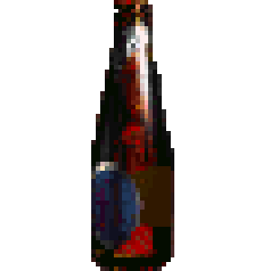

К сожалению, из-за кризиса, вызванного COVID-19, наша организация больше не является рентабельной. В связи с этим, нам придётся закрыть Некоммерческую гоповскую организацию БИЧЕХОСТЫ. В связи с этим 2 мая будет устроеная ЛАСТЕЦКАЯ ВЕЧЕРИНКА. Нынешняя ситуация заставляет нас меняться под мир, так что встреча будет ДИСТАНЦИОННОЙ. Из-за этого мы не сможем устроит контест пирогов, но проведем СВОЮ ИГРУ через Бухту Бичехостов
А самое важное, что мы распродаём запасы на игры с Квиром в доту, так что весь день мы играем в Доту впятером! (На самом деле втроем, потому что все остальные забьют)
Ставь  или ливай с канала